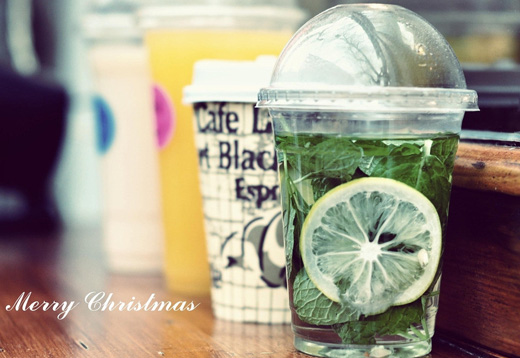
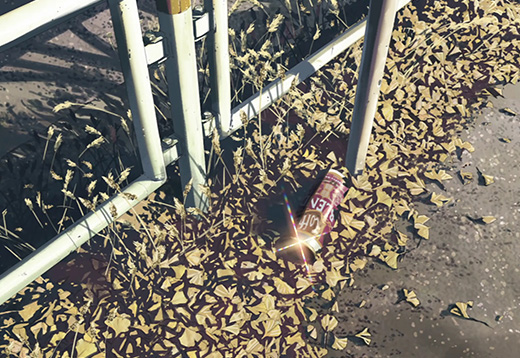

原生javascript应用
首页
联系我
CSS & HTML作品页
CSS3 & HTML5作品页
手机端静态页
Mac Dock
模拟Mac底部Dock栏图标的感应效果，通过对鼠标和图标中心的测距来完成感应测试。


Mac Dock
无缝滚动是PC大型网站首页经常要用到的一种效果，遇到过好多同行，喜欢用jQuery插件来实现，不但页面加载速度变慢，而且效果不完美，次无缝滚动也是由纯js原生手写，比较完美（因此页所列项目过多，故没加定时器轮播）。
- 0
- 1
- 2
- 3
- 4
照片墙
此效果主要运用定位转换，把页面内块的位置获取并给予每个块自己的绝对定位距离，在进行碰撞检测和随机换位操作。


分块运动
点击时候，穿件N行M列个span，来承载当前background，然后运用定时器对不同位置的span赋予不同运动时间，达到切换的视觉效果。
模拟iphone翻页
模拟iphone的翻页效果，通过判断各个图片的轴心点，来决定当前页面是否翻页。
左右拖动切换
模拟网易云音乐的滑动效果。


- 
- 
模拟视差效果
模拟3D视差效果


关于Ajax交互和Jsonp跨域交互
Ajax
由于本人刚学的php没多久，这里本人就利用自己的服务器以及数据库通过原生js封装的ajax完成一个用户注册登陆的功能
x
欢迎登陆ChenBlog账号
jsonp
通过原生js封装的jsonp制作了一些生活上的小工具